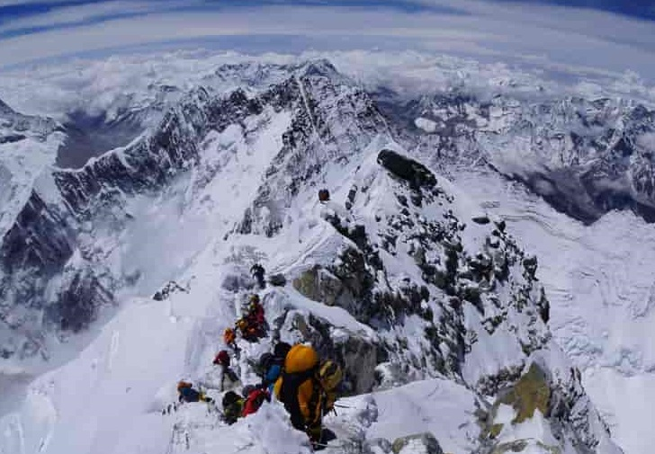
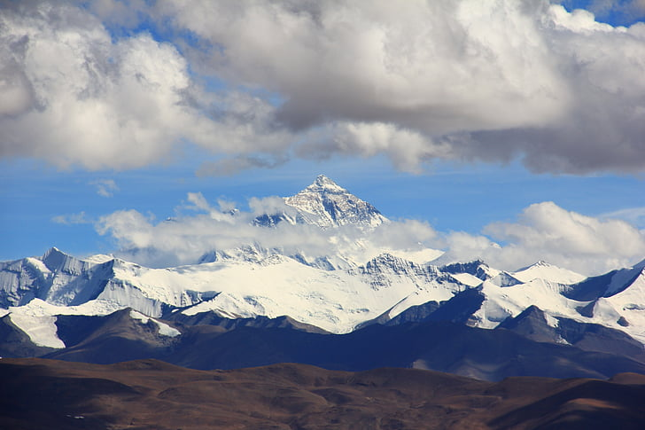
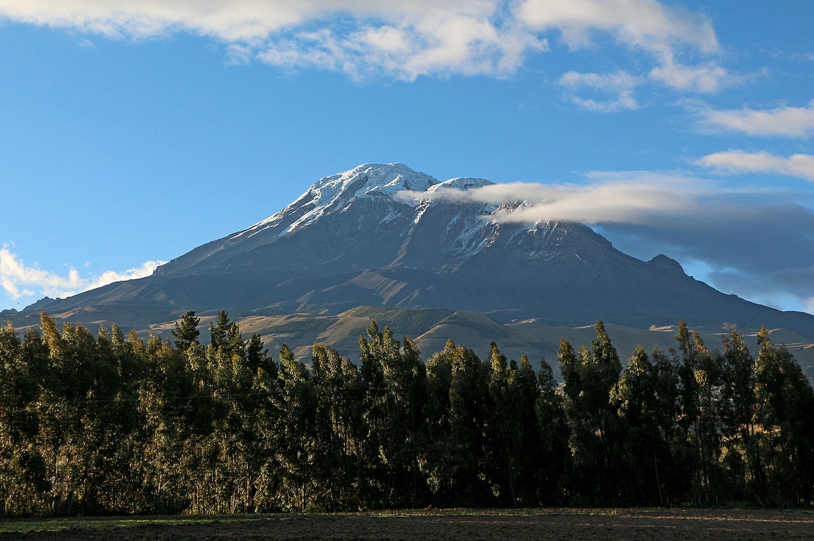
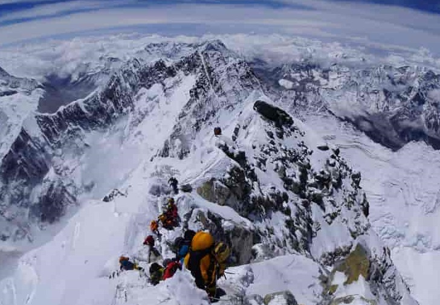
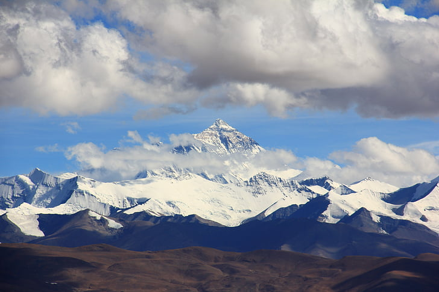
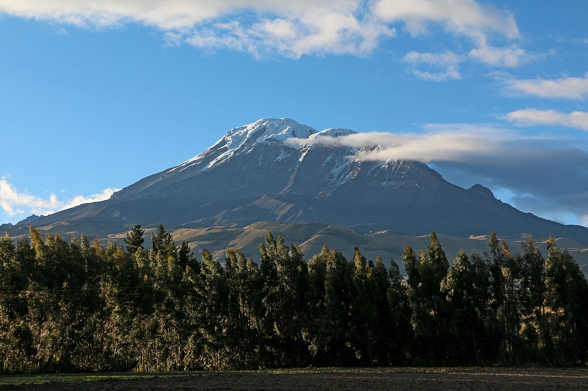
About Mount Everest
Mount Everest, also known as Sagarmatha in Nepal and Chomolungma in Tibet, is the highest mountain in the world, reaching a height of 29,029 feet (8,848 meters). It is located in the Himalayan mountain range, on the border of Nepal and Tibet. The mountain is part of the Seven Summits, the highest peaks on each of the seven continents, and is a popular destination for mountaineers and adventurers from around the world.
Everest has a long and fascinating history, with the first recorded attempt to reach the summit taking place in the early 1920s. The mountain has since been climbed by thousands of people, with the first successful summit occurring in 1953. Despite its popularity, Everest remains a challenging and dangerous mountain, with several deaths occurring each year on its slopes.
 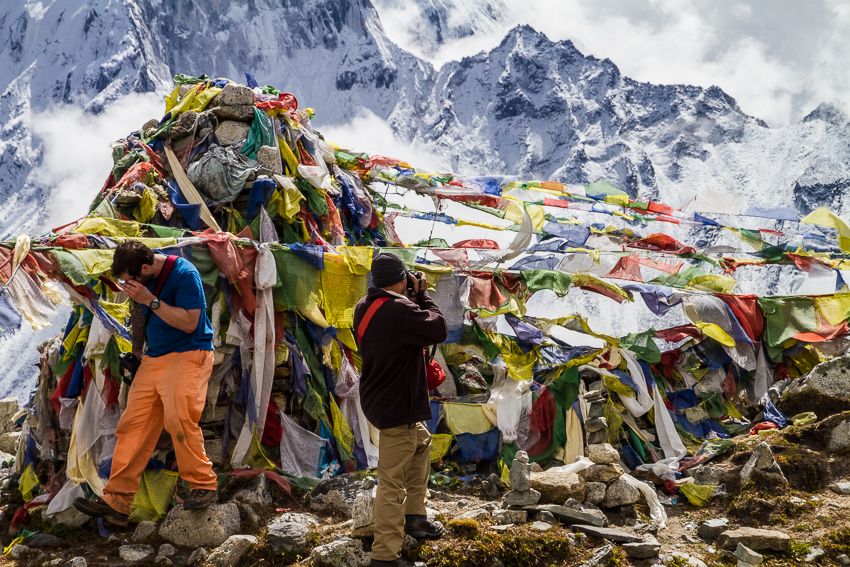
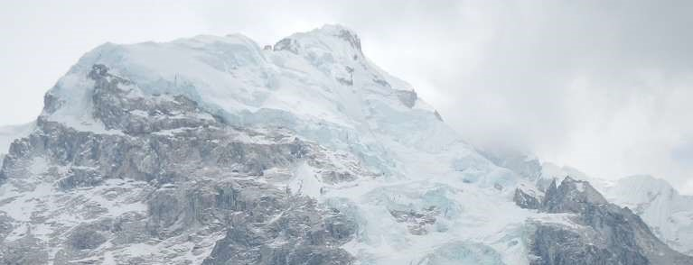
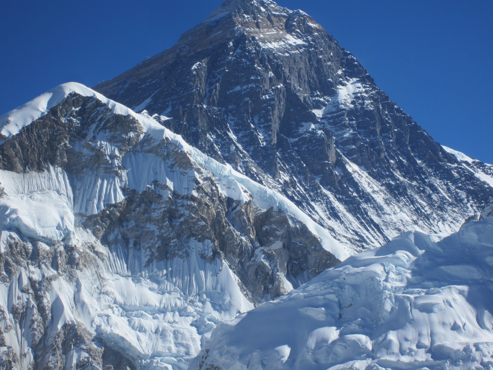
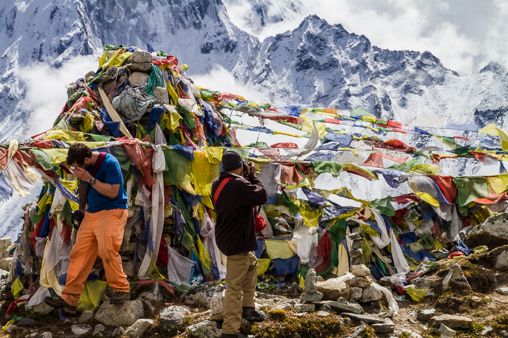
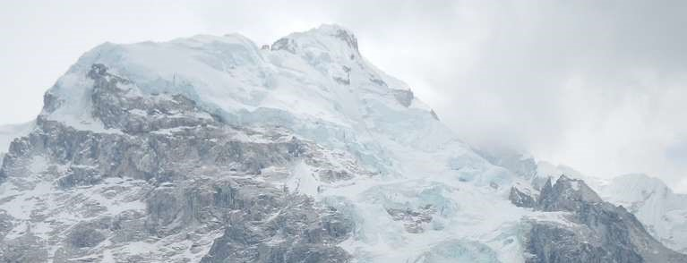
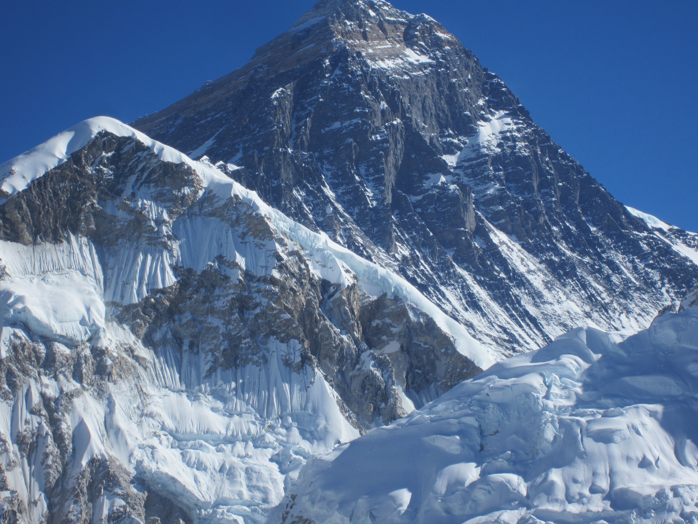